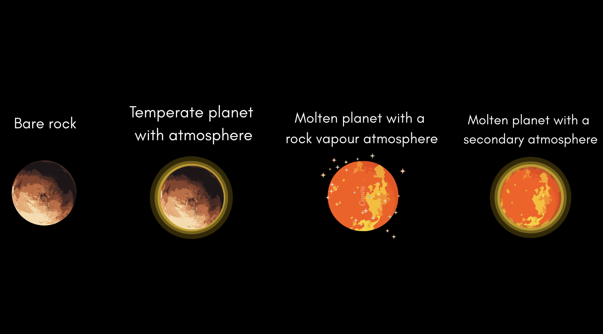

Evolución térmica de los planetas de lava a lo largo de las edades de sus sistemas: predicciones para Hell of a Survey
Título original: Thermal evolution of lava planets across system ages: predictions for Hell of a Survey
Los planetas rocosos de período ultracorto pueden ser tan calientes en su lado diurno que mantienen un océano de magma durante toda su vida. Con el marco acoplado interior–atmósfera PROTEUS, corrí una malla de simulaciones y clasifiqué los resultados en seis categorías, según cuánto del interior permanece fundido y si sobrevive una atmósfera capaz de redistribuir el calor alrededor del planeta. Luego hice predicciones para cinco objetivos del programa Hell of a Survey del ciclo 4 del JWST (8864): TOI-1807 b, TOI-2260 b, TOI-431 b, TOI-6255 b y TOI-2431 b.
- La mayoría de los objetivos evolucionan hacia un estado final de roca desnuda, con una fracción global de fundido del 20 % o menos.
- Que sobreviva una atmósfera depende de la eficiencia de escape. Existe una eficiencia mínima por debajo de la cual las envolturas de volátiles sobreviven al escape limitado por energía.
- Una superficie fundida aumenta la presión parcial de la mayoría de las especies. El S2 es la excepción: aumenta cuando la superficie es sólida, por lo que podría indicar el estado de fusión del interior.
- Estas predicciones ayudarán a interpretar las curvas de fase MIRI-LRS del programa.